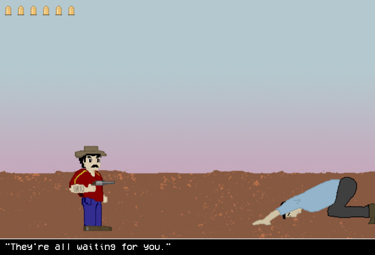

Portfolio
I believe that programmers should have an approach to programming that does not simply include the technical skills involved in most software engineering work, but an eye for design, art, and a creativity that allows them to push the boundaries of the tools they master. As such, I am not only a computer science major but an Integrated Digital Media minor. Attached is some of the best work I have done in my minor. Some of the projects on openprocessing may need to be run locally.

Audio Final
Processing Experiment

This was my final project submission for my creative coding class. It is a side scrolling Western role playing game. The gameplay mechanics were somewhat hard to figure out in p5js, a library not made for games, but I made do. Collision detection was something I had trouble figuring out with the camera, but I eventually ended up with a pretty good project. All the artwork was drawn by me.